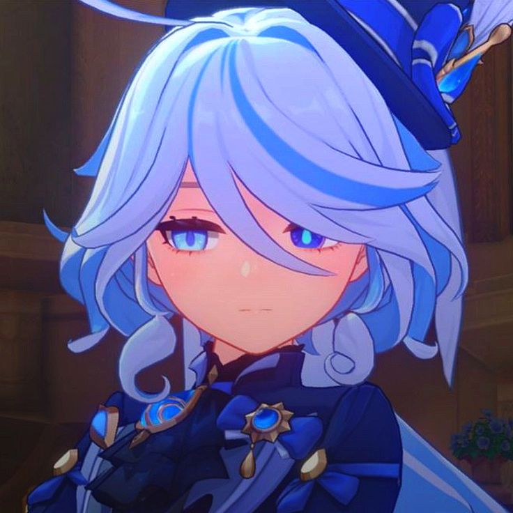
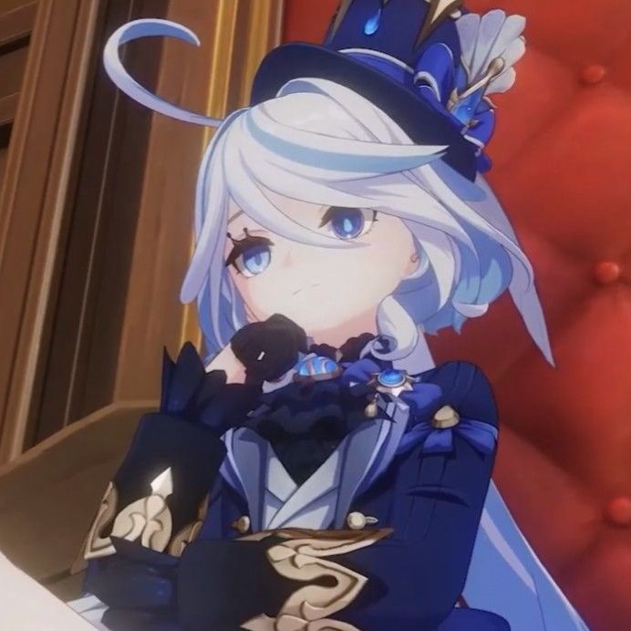

About Furina

Furina adalah karakter Hydro dari region Fontaine di dunia Teyvat.
Ia dikenal sebagai mantan Hydro Archon dengan kepribadian dramatis,
elegan, dan penuh karisma yang selalu memukau panggung opera.
Sebagai sosok yang pernah memimpin Fontaine, Furina memiliki peran
penting dalam cerita utama (Archon Quest) dan menjadi salah satu karakter
paling populer karena desainnya yang menawan, kepribadian yang kompleks,
serta perkembangan cerita yang sangat emosional.
Story
Berikut adalah sekilas kisah mengenai sang bintang utama Fontaine:
The Nation of Justice

Fontaine dikenal sebagai bangsa keadilan, tempat di mana hukum,
pengadilan, dan sandiwara menjadi pusat kehidupan masyarakatnya.
Di balik panggung kemegahan Opera Epiclese, Furina memikul beban berat
untuk menyelamatkan rakyatnya dari ramalan kuno.
Meskipun ia tampil sebagai sosok yang penuh percaya diri, teatrikal,
dan flamboyan di depan publik, Furina sebenarnya menyimpan banyak rahasia
besar dan tekanan mental yang ia sembunyikan rapat-rapat selama ratusan tahun.
Furina Ability
Di dalam pertempuran, Furina memiliki kemampuan unik yang berbasis pada manipulasi HP party:
Hydro Vision & Arkhe Shift
Furina merupakan satu-satunya karakter yang dapat berganti pola Arkhe (Pneuma dan Ousia)
secara instan melalui Charged Attack, mengubah penampilannya sekaligus efek kemampuannya.
Salon Solitaire (Elemental Skill)
Furina dapat memanggil tiga anggota salon versi Ousia untuk menyerang musuh secara otomatis
sembari mengonsumsi HP tim, atau memanggil Singer of Many Waters versi Pneuma untuk menyembuhkan karakter aktif.
Let the People Rejoice (Elemental Burst)
Memicu kemeriahan panggung yang memberikan buff Damage dan bonus pemulihan besar
kepada seluruh anggota tim berdasarkan naik-turunnya persentase HP mereka.